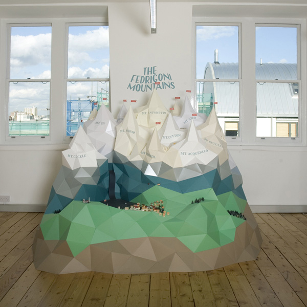

The Fedrigoni Mountains
In 2008 the paper manufacturer Fedrigoni contacted various illustrators to create art for their “a place for paper” showroom. London based illustrator and set maker Hattie Newman used the Fedrigoni paper line to create this representation of the snow-capped Dolomites surrounding Fedrigoni’s hometown of Verona.